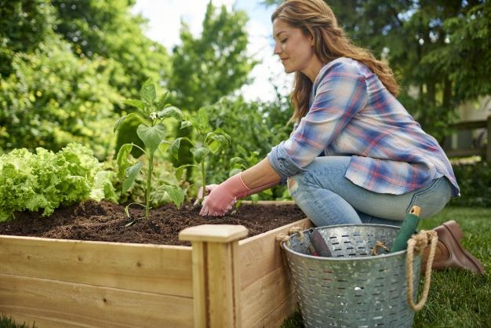

Utah is one of the most beautiful states to enjoy the outdoors. With the United States experiencing such an obesity epidemic, getting outside and exploring the slot canyons of Utah is the best way to combat this epidemic.
If mobility is an issue, then gardening is an amazing way to be a part of the growth of plants and the cycle of life that will get you outdoors.
- Hiking will improve your health by:
- Getting you out in nature
- Allowing you to discover new places
- Gardening improves your health by:
- Getting you outside digging in the dirt
- Giving the satisfaction of growing life
Watch this video of exploring the Henry Mountains in Southern Utah to inspire you to get out on a hike!
Here is a Tableau Dashboard to see the obesity rates throughout the United States.